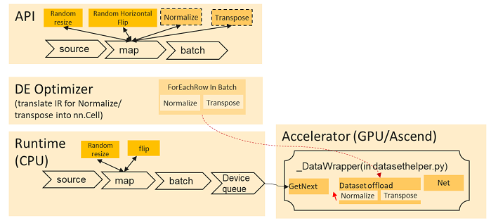

Enabling Offload for Dataset¶

Overview¶
MindSpore provides a computing load balancing technology which can distribute the MindSpore operators to different heterogeneous hardware. On one hand, it balances the computing overhead between different hardware, on the other, it uses the advantages of heterogeneous hardware to accelerate the operators.
Currently this heterogeneous hardware acceleration technology (introduced as the offload feature in the following sections) only supports moving dataset operations from the dataset pipeline to the computation graph, which balances the computation overhead between the data processing and the model training. To be specific, the dataset operators are currently executed on CPU, by using the offload feature, some dataset operators can be moved to the network in order to fully use GPU or Ascend for a better computation performance.
The offload feature will move only the supported dataset operations applied on the specific input column at the end of the pipeline to the accelerator. This includes consecutive data augmentation operators which are used in the map data processing operator, granted they come at the end of the dataset pipeline for a specific input column.
The current supported data augmentation operators which can be offloaded are:
| Operator Name | Operator Path | Operator Introduction |
|---|---|---|
| HWC2CHW | mindspore.dataset.vision.c_transforms.py | Transpose a Numpy image array from shape (H, W, C) to shape (C, H, W) |
| Normalize | mindspore.dataset.vision.c_transforms.py | Normalize the input Numpy image array of shape (H, W, C) with the given mean and standard deviation |
| RandomColorAdjust | mindspore.dataset.vision.c_transforms.py | Perform a random brightness, contrast, saturation, and hue adjustment on the input PIL image |
| RandomHorizontalFlip | mindspore.dataset.vision.c_transforms.py | Randomly flip the input image horizontally with a given probability |
| RandomSharpness | mindspore.dataset.vision.c_transforms.py | Adjust the sharpness of the input PIL Image by a random degree |
| RandomVerticalFlip | mindspore.dataset.vision.c_transforms.py | Randomly flip the input image vertically with a given probability |
| Rescale | mindspore.dataset.vision.c_transforms.py | Rescale the input image with the given rescale and shift |
| TypeCast | mindspore.dataset.transforms.c_transforms.py | Cast tensor to a given MindSpore data type |
Offload Process¶
The following figures show the typical computation process of how to use the offload feature in the given dataset pipeline.

Offload has two new API changes to let users enable this functionality:
A new argument “offload” is added to the map dataset processing operator.
A new API “set_auto_offload” is introduced to the dataset config.
To check if the data augmentation operators are offloaded to the accelerator, users can save and check the computation graph IR files which will have the related operators written before the model structure. The offload feature is currently available for both dataset sink mode (dataset_sink_mode=True) and dataset non-sink mode (dataset_sink_mode=False).
Enabling Offload¶
There are two options to enable offload.
Option 1¶
Use the global config to set automatic offload. In this case, the offload argument for all map data processing operators will be set to True (see Option 2). However, if the offload argument is given for a specific map operator, it will have priority over the global config option.
import mindspore.dataset as ds
ds.config.set_auto_offload(True)
Option 2¶
Set the argument offload to True in the map data processing operator (by default it is set to None).
import mindspore.dataset as ds
import mindspore.common.dtype as mstype
import mindspore.dataset.vision.c_transforms as c_vision
import mindspore.dataset.transforms.c_transforms as c_tranforms
dataset = ds.ImageFolder(dir)
type_cast_op = c_tranforms.TypeCast(mstype.int32)
image_ops = [c_vision.RandomCropDecodeResize(train_image_size),
c_vision.RandomHorizontalFlip(prob=0.5),
c_vision.Normalize(mean=mean, std=std),
c_vision.HWC2CHW()]
dataset = dataset.map(operations=type_cast_op, input_columns="label", offload=True)
dataset = dataset.map(operations=image_ops , input_columns="image", offload=True)
The offload feature supports being applied on multi-column dataset as the below example shows.
dataset = dataset.map(operations=type_cast_op, input_columns="label")
dataset = dataset.map(operations=copy_column,
input_columns=["image", "label"],
output_columns=["image1", "image2", "label"],
column_order=["image1", "image2", "label"])
dataset = dataset.map(operations=image_ops, input_columns=["image1"], offload=True)
dataset = dataset.map(operations=image_ops, input_columns=["image2"], offload=True)
Constraints¶
The offload feature is still under development. The current usage is limited under the following constraints:
Offload feature does not support concatenated or zipped datasets currently.
The map operation(s) you wish to offload must be the last map operation(s) in the pipeline for their specific input column(s). There is no limitation of the input columns’ order. For example, a map operation applied to the “label” data column like
dataset = dataset.map(operations=type_cast_op, input_columns="label", offload=True)
can be offloaded even if non-offload map operations applied on different data column(s) occur afterwards, such as
dataset = dataset.map(operations=image_ops, input_columns="image", offload=False)
Offload feature does not support map operations with a user specified
output_columns.